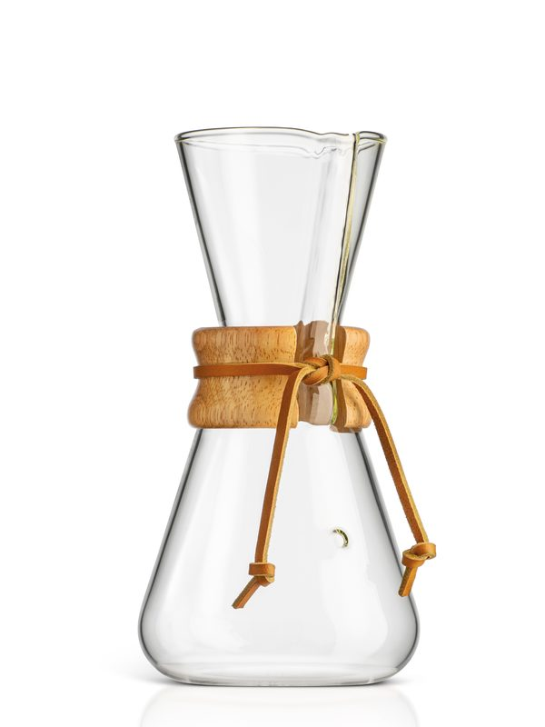

Holiday Hostess Gifts Under $50 That Aren't Another Candle
Specs and details come from the manufacturer and official pages listed under Sources. We have not hands-on tested these products or tours; nothing here is a personal review.
A good host gift is something they'll use after the party ends, not one more thing to find space for. Every pick here came in under $50 on Amazon when we checked (Oct 27, 2026). They're grouped by the kind of host you're visiting.
For the host who bakes
Nordic Ware Pine Forest Bundt Pan (9 cup)
Best for: a holiday baker or a host who does a seasonal dessert
- 9 cup capacity
- Cast aluminum with a ring of sculpted evergreen trees; silicone nonstick interior
- Oven safe to 425°F; hand wash recommended
- Lifetime warranty
Specs per: Nordic Ware product page (accessed 2026-10-27).
Nordic Ware Anniversary Bundt Pan (10-15 cup)
Best for: hosts who bake for gatherings
- 10 to 15 cup capacity
- Cast aluminum with a silicone nonstick interior and side handles
- Oven safe to 425°F; hand wash recommended
- Made in America of domestic and imported materials; lifetime warranty
Specs per: Nordic Ware product page (accessed 2026-10-27).
For the coffee host
CHEMEX Classic 3-Cup Pour-Over Coffeemaker (CM-1C)

Best for: a host who drinks coffee for one or two
- About 15 oz (3 CHEMEX 5-oz cups)
- Borosilicate glass with wood collar and leather tie
- Uses FP-2 or FP-2N half-moon filters (not included)
Specs per: CHEMEX product page (accessed 2026-10-27).
Add a pack of FP-2N filters (see our stocking stuffer guide), since the brewer ships without them.
Small, giftable and practical
Le Creuset Stoneware Mini Round Cocotte (8 oz, White)
Best for: individual desserts, dips or butter at the table
- 8 fl oz stoneware with lid
- Oven, broiler, microwave, freezer and dishwasher safe per Le Creuset
- 10-year limited warranty
Specs per: Le Creuset product page (accessed 2026-10-27).
Lodge 6.5-Inch Seasoned Cast Iron Skillet (L3SK3)
Best for: a small add-on gift: single eggs, cornbread for two, serving a warm dip
- 6.5 in diameter
- Seasoned cast iron, made in the USA
- Stove, oven, grill or campfire
- Hand wash, dry, then oil lightly
Specs per: Lodge product page (Classic skillets incl. L3SK3); Amazon listing (retailer) (accessed 2026-10-27).
Pairing ideas
- Pine Forest Bundt + a favorite spice-cake recipe card.
- Mini cocottes + a jar of good jam or a dip recipe.
- 6.5-inch skillet + a cornbread mix.
FAQ
- How much should you spend on a hostess gift?
- There's no fixed rule. Everything here was under $50 on Amazon when we checked.
- Can Nordic Ware Bundt pans go in the dishwasher?
- Nordic Ware recommends hand washing these nonstick cast-aluminum pans.
Sources
- Nordic Ware Pine Forest Bundt Pan (9 cup): Nordic Ware product page (accessed 2026-10-27)
- Nordic Ware Anniversary Bundt Pan (10-15 cup): Nordic Ware product page (accessed 2026-10-27)
- CHEMEX Classic 3-Cup Pour-Over Coffeemaker (CM-1C): CHEMEX product page (accessed 2026-10-27)
- Le Creuset Stoneware Mini Round Cocotte (8 oz, White): Le Creuset product page (accessed 2026-10-27)
- Lodge 6.5-Inch Seasoned Cast Iron Skillet (L3SK3): Lodge product page (Classic skillets incl. L3SK3) (accessed 2026-10-27)
- Lodge 6.5-Inch Seasoned Cast Iron Skillet (L3SK3): Amazon listing (retailer) (accessed 2026-10-27)
Prices aren't listed because they change often; check the current price with the retailer before buying. Spotted an error? See the contact details on our About page.